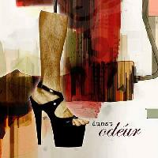

| 17. Marts 2005 |
Den alternative performancegruppe Dunst holder 17/3 pladereception på deres første CD, Odéur. Den officielle del følges op af et release party i bedste dårlige stil med optræden af Dunst' performere, og vanen tro bliver det garanteret alt andet end støj- og lugtfrit.

Flere og flere kender dem som de uhæmmede freaky personager der jævnligt sætter Ungdomshuset i København på den anden ende. De kalder sig Dunst oghar allerede nogle ganske imponerende events at føje til deres CV. Et darkroom- og poppers-party i en sightseeing-bus, den alternative skønhedskonkurrence "Hr og Fru Dunst", og utallige ustyrlige fester med trash som det overvejende tema, er nu møntet ud i en CD med det bedste af det værste.
CD'en bærer titlen "Odéur", og performerne på pladen inkluderer så celebre
navne som Dennis Agerblad, Miss Fish, Puta, Johnny Warehouse, gayrokk,
Minimal Martin og Alexis. Stilmæssigt spænder den samlede gruppe vidt, hvor
alt fra indie, electro, punk og disco repræsenteres i en lydmæssig indpakning, der ihvertfald ikke kan kaldes kedelig.
Fest natten igennem;
Fra kl. 23 og natten ud er alle inviteret til release party i Culture Box i Kronprinsessegade. Entreen er 60 kroner, men så kan man også se frem til
stinkegod underholdning med live-performances af blandt andre Puta, Miss
Fish, Hairwerk og Dennis Agerblad, samt fire forskellige DJ's.
Skribent - Thomas Kim Rasmussen
Reference:
http://homotropolis.dk/kultur/artikel.php?id=2538
Print denne side